The short version
The current figures are outlines. On the map, gen/meshes/humanoid.ts builds characters from boxes; on the
character sheet, figureFor() draws an SVG silhouette. Neither one changes when you equip something. Every approach
below reads the same inputs the game already has: race, the Appearance fields on a character, and the
baseId and rarity of each equipped item. From those it produces a character that changes with its gear.
None of them needs new save data.
It looks most like Stardew, gear reads most clearly at phone size, and it is the cheapest to run: 0.4 ms per frame and 5.7 ms for a character's whole 48-frame sheet. The same sprite serves the map at ×1 and the character sheet at ×5.
It keeps the renderer, camera and lighting the game already has. Walls become ~0.24-thick masonry runs along hex edges. The ones between you and the room are cut down to stubs, and the solid rock behind them is drawn as a dark mass. 16 draw calls for a whole floor.
Build the character in 3D (B or C), render it once into a 32-frame atlas (82 ms per loadout change), then use plain sprites. This is the upgrade path if four facings stop being enough.
| Approach | Look | Gear legibility | Facings | Cost to generate | Map frame¹ | New body plan costs | |
|---|---|---|---|---|---|---|---|
| 1 | A · Pixel paper-doll 2D, code-drawn | ●●●●● | ●●●●● | 4 (2 + mirror) | 0.4 ms / frame | 0.1 · 0.5 ms | code (a shape grammar) |
| 2 | E · Bake from 3D 3D → sprite atlas | ●●●●● | ●●●●● | 8+ | 82 ms / loadout | 0.2 · 0.4 ms | inherits B or C |
| 3 | B · Voxel 3D, blocks | ●●●●● | ●●●●● | any | ≈13 ms (9–27) | 0.9 · 1.0 ms | code (volumes) |
| 4 | D · Sprite stacking 2D slices of B | ●●●●● | ●●●●● | any | 7.7 + 4.7 ms / angle | 0.2 · 0.5 ms | free once B has it |
| 5 | C · Pixel-3D toon meshes, low-res | ●●●●● | ●●●●● | any | ≈0.7 ms | 2.3 · 3.2 ms | code (meshes) |
¹ Median time to draw one frame of the Cisterns map with the party and two foes, gl.finish() after each frame so GPU time counts, 4× CPU throttle, at ⅓ and full resolution. Measured in headless Chrome on an Apple M4 Pro. Not measured on a phone. Treat these as relative, not absolute. The "look" and "legibility" dots are my judgement from the pictures on this page, not measurements.
One recipe table, every renderer
The core idea behind all five: an item's look is data, not a picture. Each of the game's 54 bases gets a short visual recipe next to its stats, describing what it is made of, how it covers the body and what shape it is. Every renderer reads the same table. A new sword is one new row, not new art. A rarity adds a trim colour, and Very Rare and Legendary also glow. Gold appears only on Legendary.
// lib/data.js — beside each base's stats (a copy; the game's data/items/bases would carry this) { id: 'chainMail', slot: 'body', vis: { mat: 'iron', chain: true, sleeves: 2, skirt: 0.35, tabard: true } } { id: 'robe', slot: 'body', vis: { mat: 'cloth', tint: true, sleeves: 2, skirt: 1.0, sash: true } } { id: 'halberd', slot: 'mainHand', vis: { kind: 'polearm', len: 1.05, head: 0.16, blade: 'axe', twoHanded: true } } { id: 'buckler', slot: 'offHand', vis: { kind: 'shield', shape: 'round', size: 0.20, mat: 'iron' } }
Lengths are in body-heights, so a halfling's greatsword is scaled to the halfling. tint means "take the character's own primary colour". Robes and padding come in the wearer's colours, while metal is always metal.
The same eight loadouts, four renderers
A pixel paper-doll
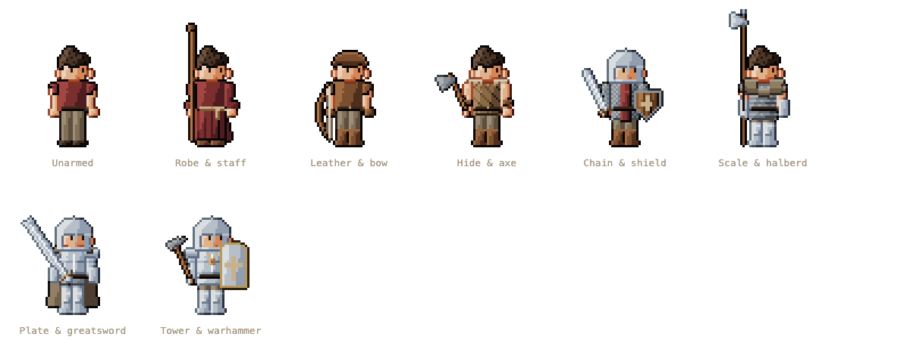
B voxel (a dwarf)
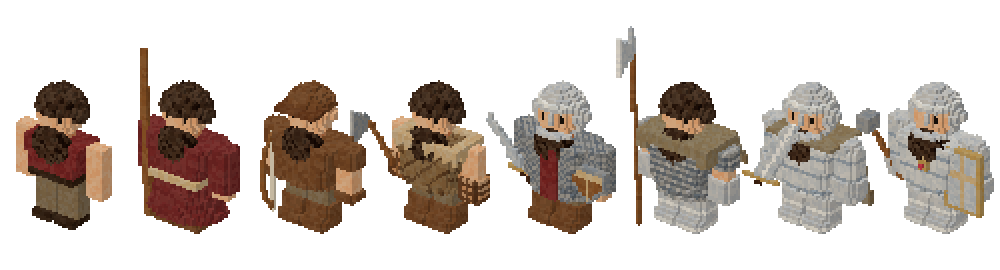
C pixel-3D (a dwarf)
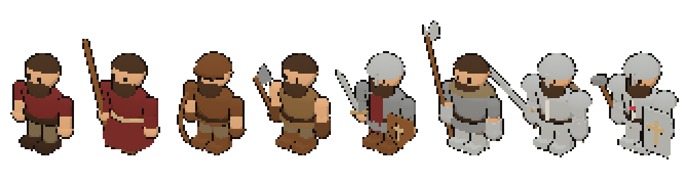
D sprite-stacked
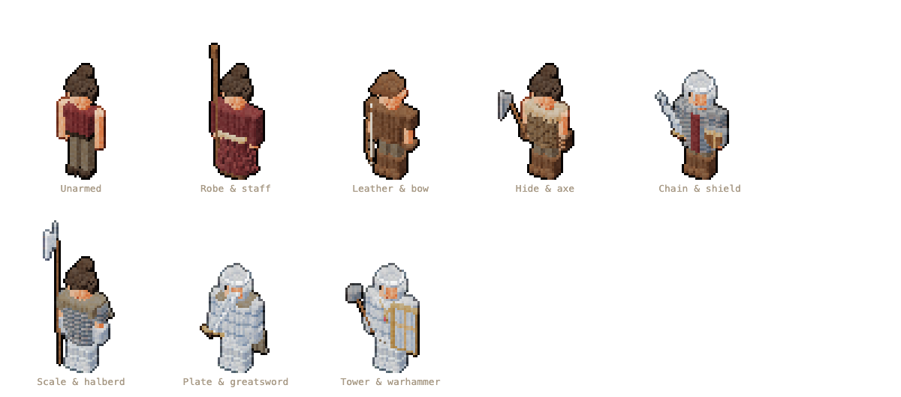
Unarmed → robe & staff → leather & bow → hide & axe → chain & shield → scale & halberd → plate & greatsword → half-plate, tower shield & warhammer.
Procedural pixel paper-doll
Code draws the character pixel by pixel. It builds a body from masks proportioned by race (legs, torso, arms and a big readable head), then draws each equipped item from its recipe in layer order: feet, legs, body armour, arms, head, headgear, cloak, weapon, shield. Pixel art needs three things and all three are generated: hue-shifted ramps (shadows lean cool, highlights lean warm), shading worked out from each part's own silhouette, and a selective outline that takes its colour from whatever pixel it borders. Materials are patterns laid over the ramp: chain is a checker, scale is scalloped rows, studs are bright dots, plate has seams.
Eleven races same padded armour + boots
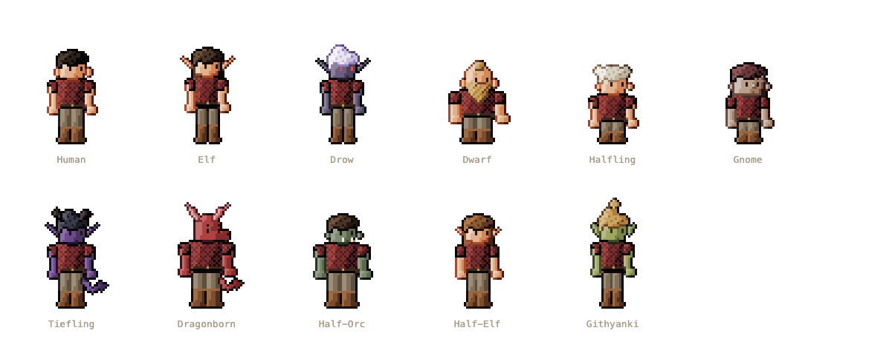
Ears, horns, tails, snouts, tusks, beards, curls and topknots come from race flags. Dwarves, halflings and gnomes are shortened in the legs, not the head, so they stay readable.
Twelve classes each class's default kit
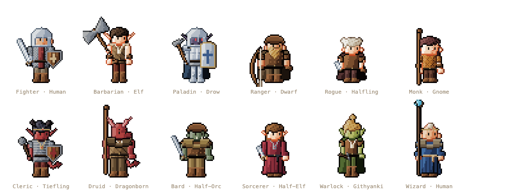
All 54 item bases one plain body, one item at a time
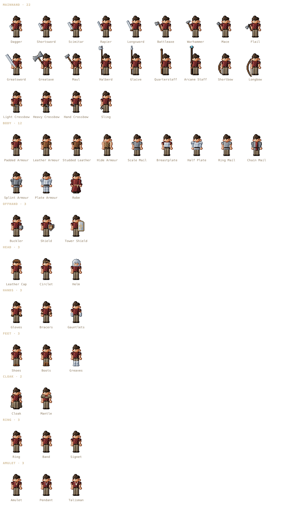
Every base is distinguishable. The weak spot is honest: rings are a single glint pixel, and amulets are a 3×3 pendant. At map scale, small jewellery should say what it is through rarity glow, not shape.
Rarity every slot set to the same tier
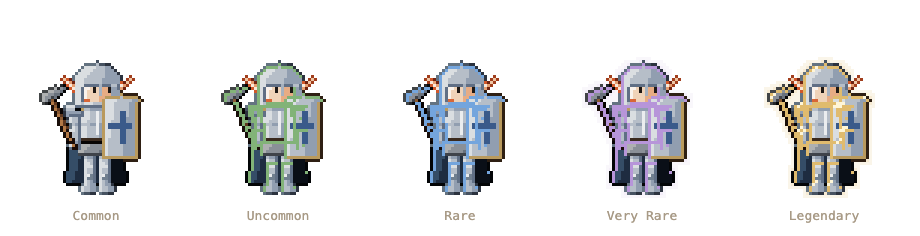
Common has no trim. Uncommon, Rare and Very Rare add a rim in their colour. Very Rare and Legendary add a halo, and Legendary adds a glint that travels along the item frame by frame. Only Legendary is gold.
Animation, facings and scale
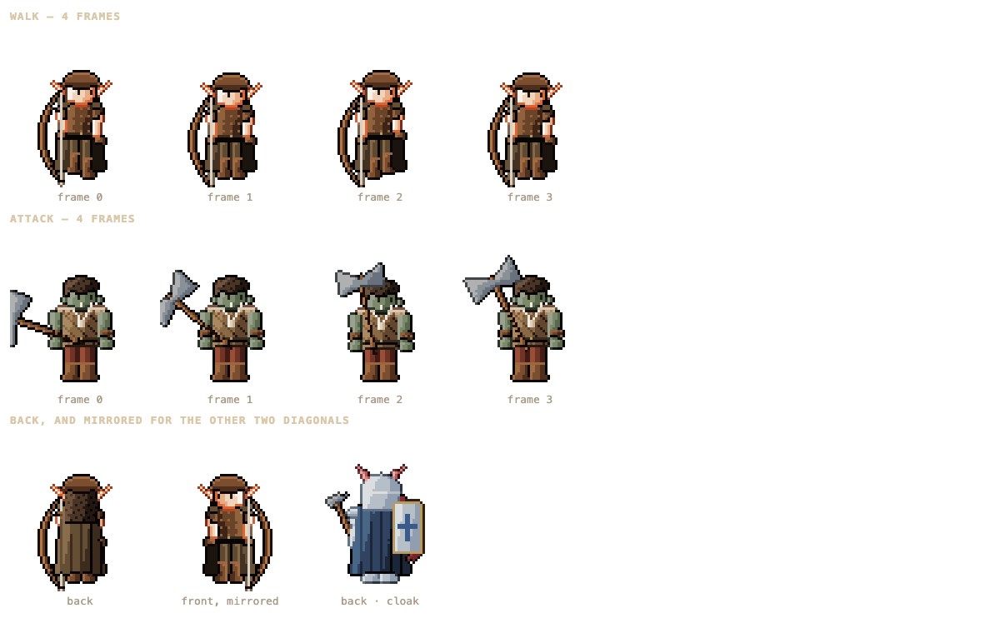
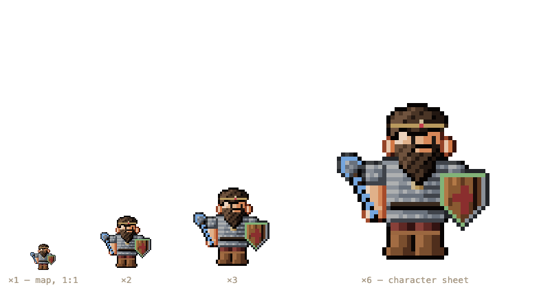
One sprite serves every size: ×1 on the map, ×2 in the roster band, ×6 on the character sheet (in place of figureFor()). It is always nearest-neighbour, which keeps it crisp.
Twenty-four random companions no curation, seeded
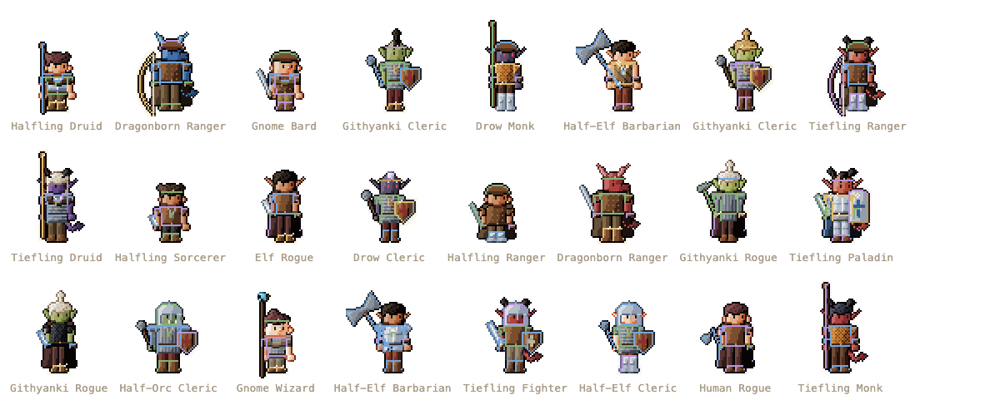
Random race, class kit, a few random slot swaps and random rarities. This is what a roster would look like without anyone choosing.
Creatures same body, synthetic races, two new shapes
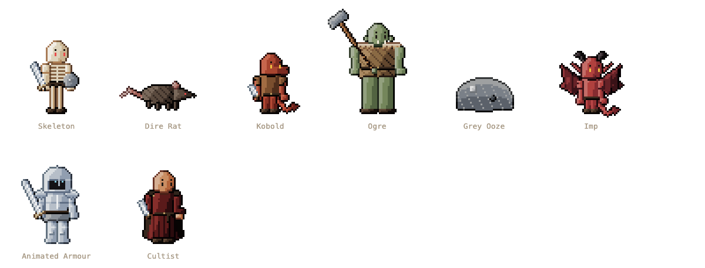
Skeleton, kobold, ogre, imp, animated armour and cultist are the character body with a creature race and form flags. The rat and the ooze needed their own small shape code. That is the real cost: every new item is data, every new body plan is code.
For
- Looks most like the reference (Stardew): outlines, ramps, readable faces.
- Gear is most legible at phone size, because it is drawn for the pixel grid rather than projected onto it.
- Costs almost nothing: generate on equip and cache by loadout hash (
gen/cache.tsalready exists). - The same output replaces both the map mesh and the SVG figure.
Against
- Two drawn facings (front, back), mirrored to four diagonals. There is no true side view.
- Poses are hand-coded, so a new animation means new pose code.
- New body plans (quadrupeds, oozes, wings) need their own shape code.
- Rings and amulets are too small to read by shape.
Voxel
Race-proportioned body parts are built as voxel grids (1 voxel = 1/24 of a world unit, so a human stands about 42
tall, the same as A's sprite). Armour is made by wrapping a region of a part in a one-voxel shell, so a helm is
the skull grown by one, and boots are the lower leg grown by one. Weapons are built in the right arm's own space, so
they swing with it. Each part is a separate mesh around a pivot, which gives the same named rig
(legL legR torso armL armR head) as today's humanoid.
Classes
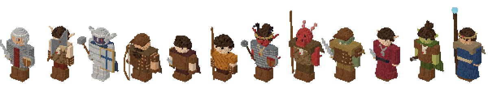
Races padded + boots
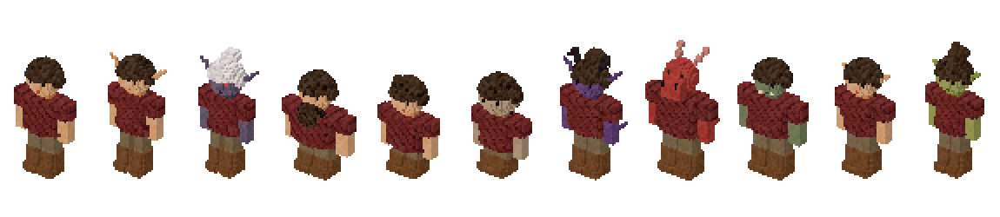
Rarity & creatures
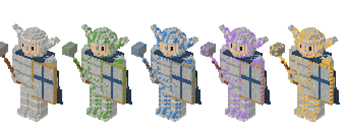
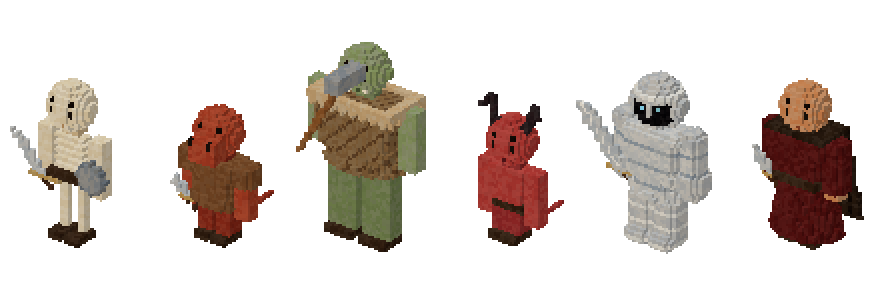
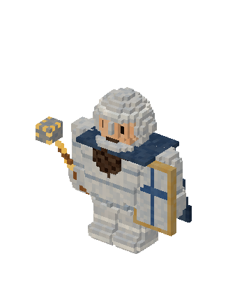
Close-up at full resolution: a dwarf paladin with a Legendary warhammer.
For
- True 3D: any facing, real lighting and shadows, rotation-driven animation.
- It has a charm of its own, and it's the most solid-looking of the five.
- The volume is reusable: D slices it, E bakes it.
Against
- Reads as Minecraft or Roblox, not Stardew.
- Faces are coarse, with eyes one voxel wide.
- A voxel map is heavy: 666,614 triangles for one floor (see M2).
Pixel-3D
Smooth low-poly parts (capsules, lathes, extruded blade and axe profiles) with a 3-step toon ramp and an
inverted-hull outline, with the scene rendered at ⅓ resolution and scaled up nearest-neighbour. This is the
technique behind the recent 3D games that read as pixel art. It is the direct upgrade of today's
humanoid.ts, with the same rig names and the same place in the renderer.
Classes
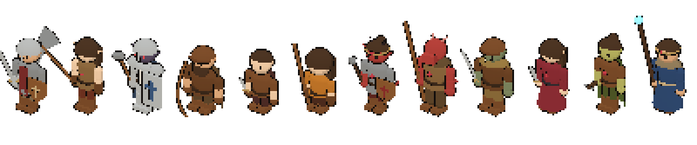
Races & rarity
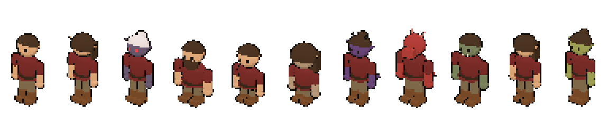
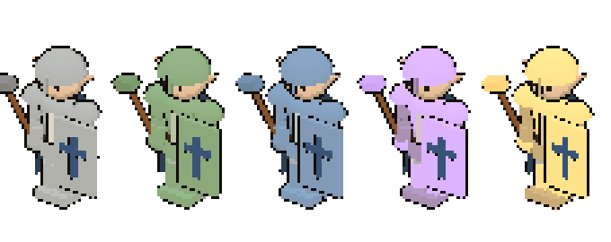
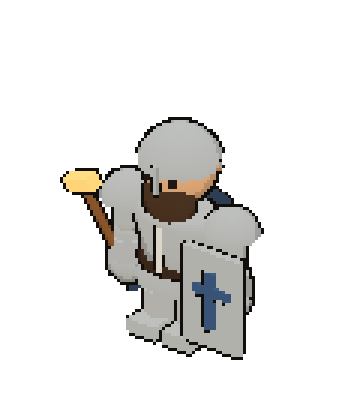
For
- The least disruptive change: same renderer, same rig, same animation code.
- Any facing, smooth motion, real light.
- Cheap to build.
Against
- The weakest look of the five: faces are dots and the pixel feel is a filter, not a style.
- Every part is a mesh plus an outline mesh, so draw calls climb fastest (see the numbers).
- I built only the humanoid body plan for C. Skeleton and ooze forms are not built.
Sprite stacking
The model is a stack of horizontal slices, here the layers of B's voxel volume. Each slice is rotated in 2D and drawn one pixel above the one below. The result is a pixel sprite at any angle with no 3D renderer. It is inverse-mapped per pixel, so rotation never leaves holes.
A turntable: one volume, eight angles
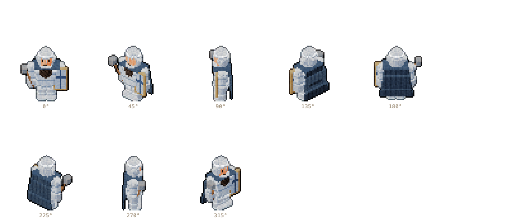
Classes & creatures
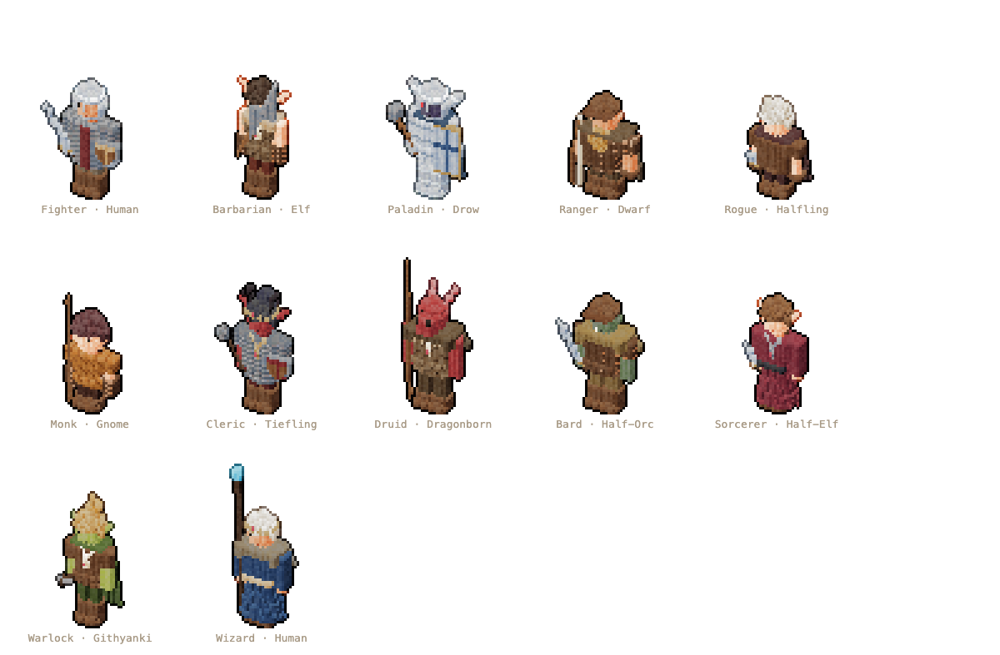
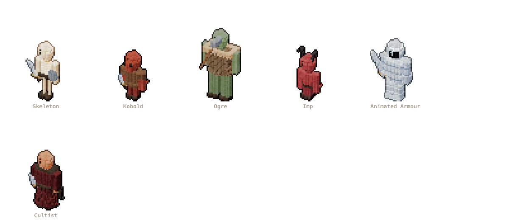
For
- Every facing, fully pixel, no WebGL needed.
- Comes for free once B exists.
Against
- Gets muddy at small sizes: faces and trims blur into the slices.
- It is a 2D technique. In a three.js scene it becomes billboards anyway, so E does the same job more cleanly.
Bake from 3D
Build the character in 3D (C or B), render it once per facing and frame into a 64×80 atlas, outline it, and use the frames as plain sprites everywhere. The 3D cost is paid only when the loadout changes, keyed by a hash of everything that affects the look. The one below is 8 facings × 4 walk frames.
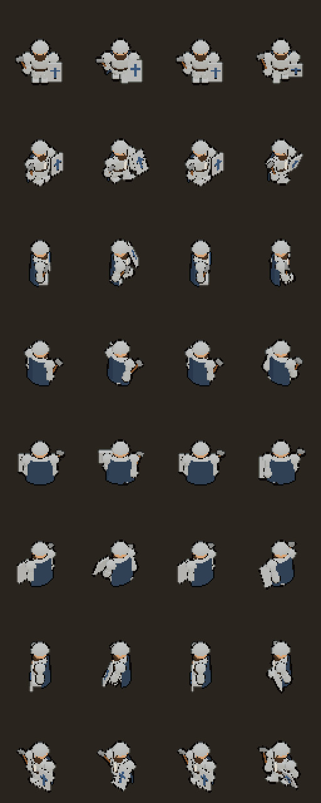
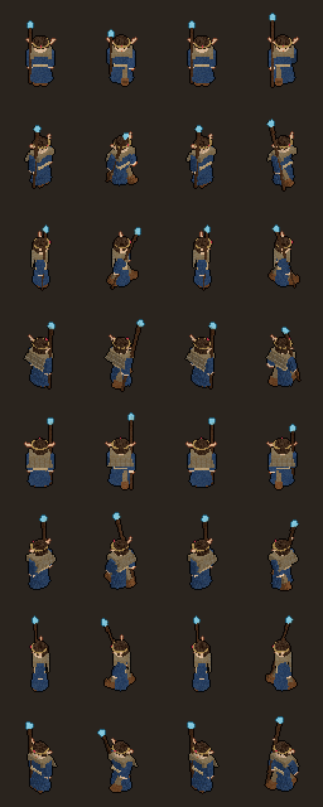
For
- Eight facings with the runtime cost of A.
- Pairs with any 3D source, so B and C become authoring tools rather than runtime cost.
Against
- It can only look as good as its 3D source. Downscaled 3D is softer and less "designed" than A.
- 82 ms on equip is fine on desktop. On a phone it is not measured.
Try it
These live demos need the page served over http (ES modules do not load from file://). Run node docs/character-proposals/tools/serve.mjs and open http://localhost:5178/.
The map, on hexes
Floors and walls are functions of world position, not tiles: floorAt(biome, x, y) and
wallAt(biome, u, v) in map/surfaces.js. Flagstones are a Voronoi pattern sampled in world space,
so stones run across hex borders and no two hexes are alike. That is what fixes "barren". Each biome adds its own
detail: moss in the Cisterns, bone litter in the Ossuary, mushroom clusters in the Fungal Reach, lava in the joints of
the Cinderworks, tide-pools in the Drowned Vault, rime on the Rimehollow, inlaid lines in the Sable Court and roots in
the Wyrm Deeps.
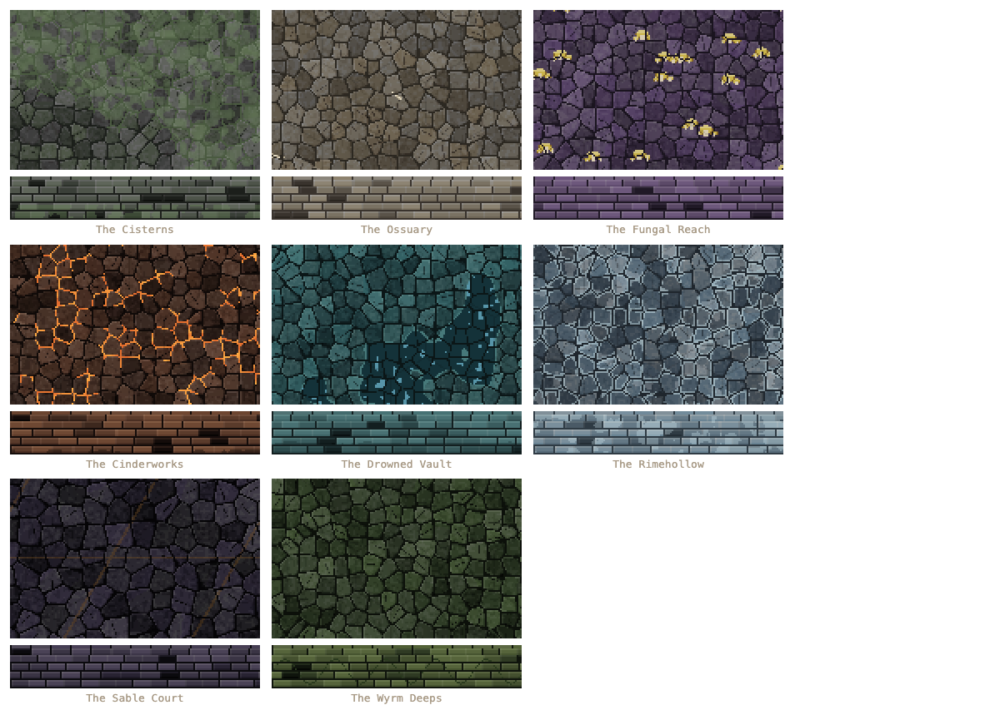
Walls are edges, not blocks
The sim can stay cell-based: a cell is floor or wall, as sim/dungeon/tiles.ts has it today. What changes
is what gets drawn. A wall cell is never drawn as a block. Every edge it shares with a floor cell becomes a
thin masonry run, 1.0 high (the old walls were 1.15 cubes) and 0.24 thick, standing inside the wall cell so it
takes no floor. A run between the room and the camera is cut down to a 0.3 stub, so it never hides the party.
The rock behind the walls is drawn as a dark mass at wall height. Without it, thin walls look like fences.
M1 · three.js, textured recommended · works with every character approach
The floor texture is baked once per floor from floorAt (690×423 px for a 30×22 hex dungeon). Wall runs are real geometry with baked masonry, torches are point lights, and the party carries a lamp. The whole scene renders at half resolution.
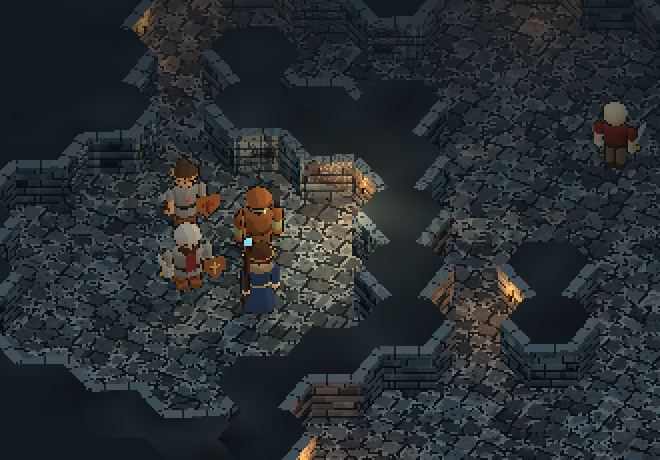
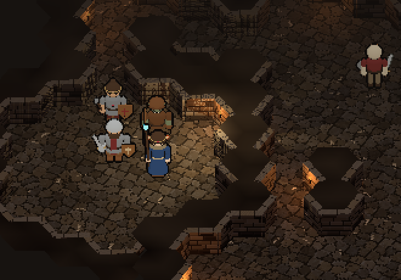
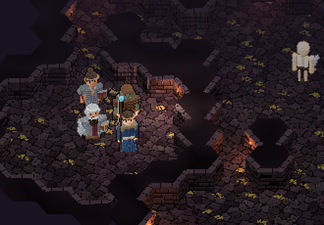
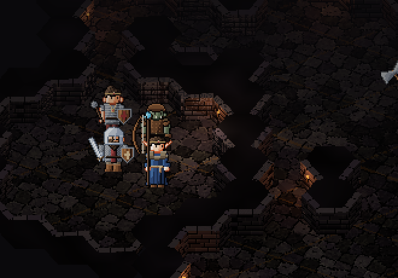
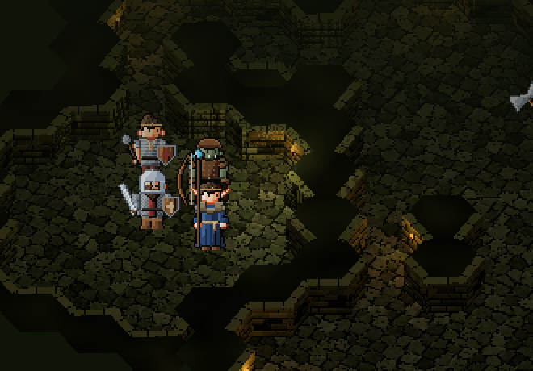
M2 · three.js, voxel pairs with B
The floor is 48,590 instanced voxels sampled from floorAt with the grout sunk, and the walls are laid as 2,520 instanced bricks. It is two draw calls for the terrain, but 666,614 triangles.
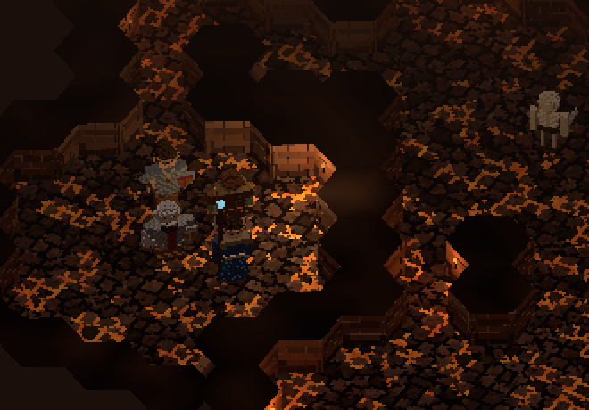
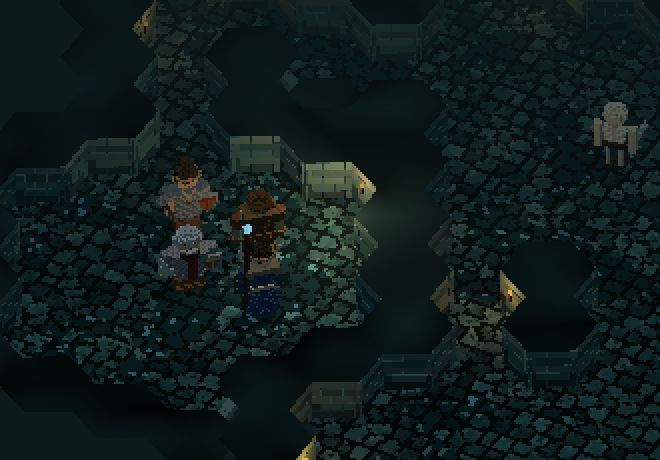
M3 · pure 2D pixel art 3/4 top-down camera, every biome
Everything is sampled per pixel onto a canvas. Floors, walls and torch light are baked once (221–304 ms). Each frame copies that layer, draws the sprites against a depth buffer so a wall in front hides whoever stands behind it, and applies the party's light: 1.5–1.7 ms per frame at 330×220. It looks the most like Stardew. The cost is a fixed camera and a replacement for the three.js renderer.
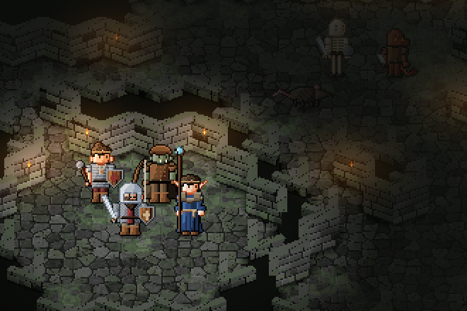
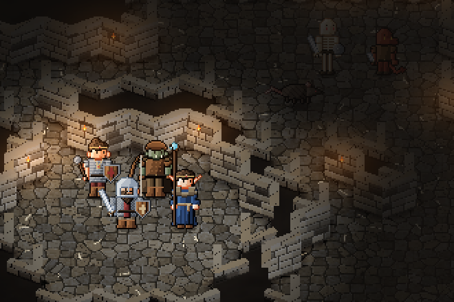
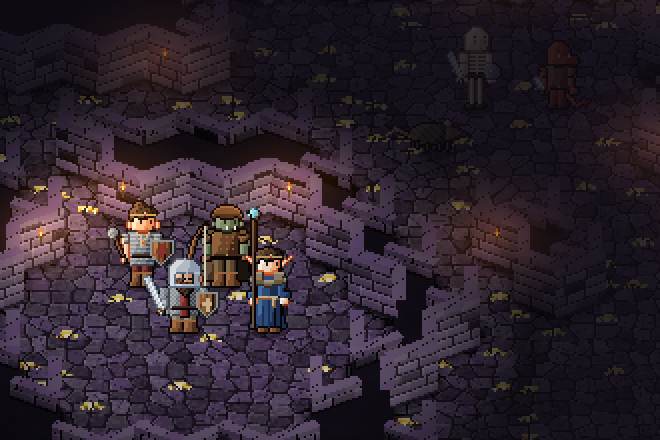
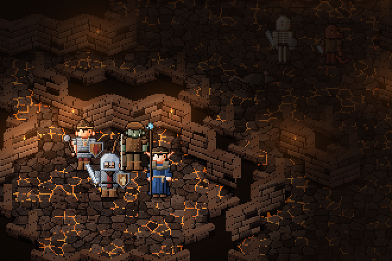
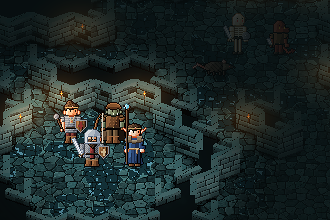
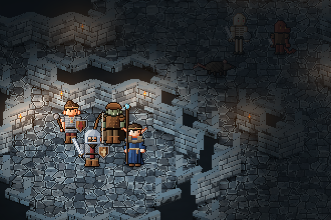
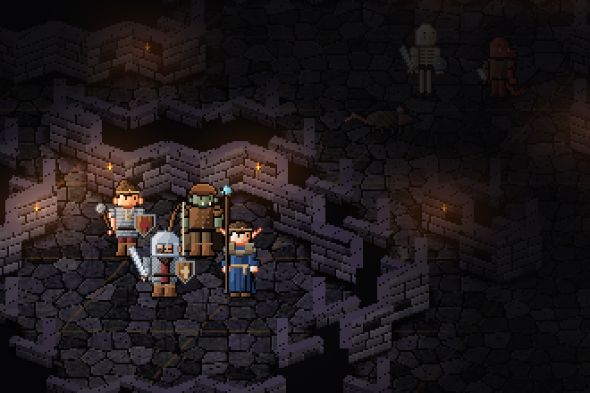
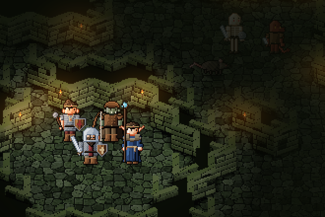
Walk the 3D map yourself
Needs the local server (see above).
What was measured
Every number on this page comes from tools/capture.mjs, run on 25 Sep 2026 in headless Chrome on an
Apple M4 Pro (ANGLE / Metal). None of them was measured on a phone. That gap matters most for the triangle-heavy
options.
| What | Measured | How |
|---|---|---|
| A — one frame | 0.4 ms | median of 40 characters across all races and classes |
| A — full sheet (2 facings × 3 anims × 4 frames) | 5.7 ms | median of 40 |
| B — build one character | 8.6–26.8 ms, median 13 · 3,176–6,648 quads | 23 characters (12 classes + 11 races) |
| C — build one character | 0.3–1.9 ms, median 0.7 (≈5 ms first) | 23 characters; the first of each run pays warm-up |
| D — slice / render one angle | 7.7 ms / 4.7 ms | median of 40 |
| E — bake 32 frames / cache hit | 82 ms / ≈0 ms | C and B sources both 82 ms |
| M1 — build a floor | 331–374 ms · 16 calls · 3,648 tris | 30×22 hexes, 280 wall runs, 25 torches, A/D/E actors |
| M1 with C actors | 267 draw calls · 37,632 tris | 6 toon characters with hull outlines |
| M2 — build a floor | 150–167 ms · 50 calls · 666,614 tris | 48,590 floor voxels + 2,520 bricks, B actors |
| M3 — bake / frame | 221–304 ms / 1.5–1.7 ms | 330×220, all eight biomes, median of 10 frames |
| Map frame, M1 + A (⅓ res · full res, 4× CPU) | 0.1 · 0.5 ms | median of 120 frames, gl.finish() each |
| Map frame, M1 + E | 0.2 · 0.4 ms | same |
| Map frame, M1 + D | 0.2 · 0.5 ms | same |
| Map frame, M2 + B | 0.9 · 1.0 ms | same |
| Map frame, M1 + C | 2.3 · 3.2 ms | same |
| Phone GPU, memory, battery | not measured | needs a device |
The plan
Recommendation: A for characters, M1 for the map, E kept in reserve. In order, if approved:
- Recipes into data. Add a
visfield toBaseItemindata/items/bases/*, with the 54 rows as drafted inlib/data.js. Content stays data (R3). No save change: the look comes entirely from existing fields and equipped items. - Port A to
gen/sprites/as TypeScript, in the same place asgen/textures, with noui/imports (R1). Cache the sheet by loadout hash ingen/cache.ts. - Character sheet and roster: replace
figureFor()inui/components/parts.tswith the sprite at ×5–6, and the roster band at ×2. - Map actors: swap the humanoid mesh in
render/actors/ActorView.tsfor a billboard. Facing comes from the movement vector, snapped to the four diagonals. - Hex map (its own pass): the sim moves to axial coordinates,
TileMesherbecomes a hex mesher with wall runs, rock mass and cutaway, andwallFade.tsis replaced by the cutaway. Pathing, AoE shapes, line of sight and the dungeon generator all change. I have not surveyed that scope yet, so it should be planned on its own before any of it starts.
Considered and rejected
- Layered sprite packs (the LPC "Universal Spritesheet" family). This is the usual answer to "gear changes the look". The packs are CC-BY-SA / GPL, not CC0, which breaks the sourcing rule in
12-art-direction/asset-pipeline.md. They would also be the "sprite per item" you want to avoid. - AI image generation per item. It isn't deterministic, doesn't run offline, gives no guarantee the same sword looks the same twice, and its provenance fails the same sourcing rule.
- Hand-drawn sprites. This is the thing we're avoiding. A's output could serve as a base for an artist later, though.
- Keeping the SVG figure and tinting it. A colour swap can't show a halberd.